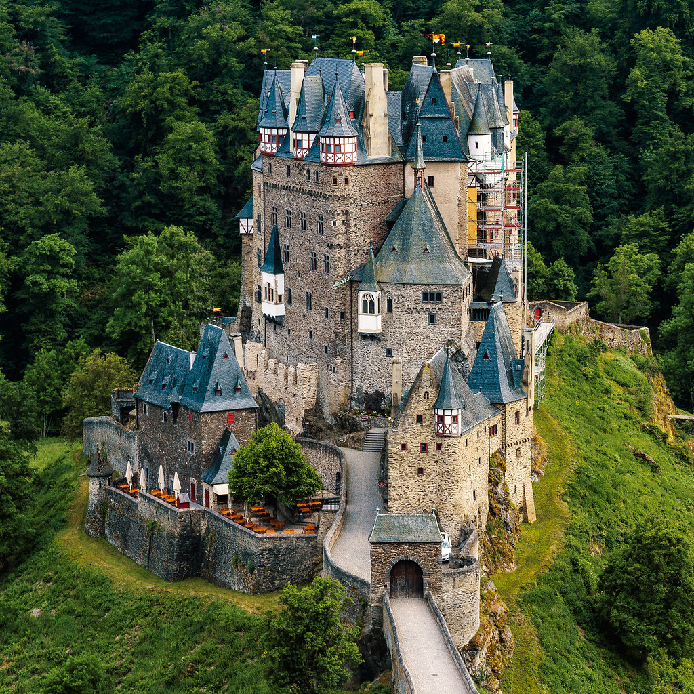
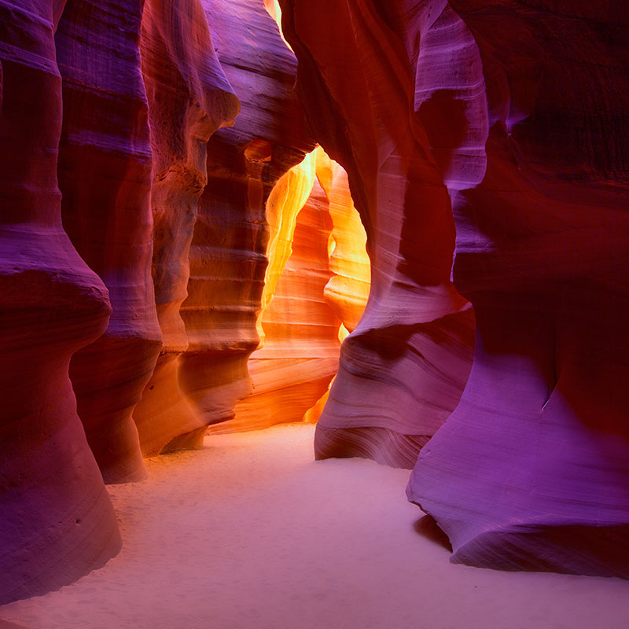

Completely pointless but fun website!
For travel-crazy people

Eltz Castle is one of the best places in the whole world! It is a medieval castle in Wierschem, Germany. It is often reffered to as the 'fairytale castle,' and is my dream destination. This castle is about 150 years old, and is a well known tourist attraction. There is still a family living in the castle, and every member is very lucky to have inherited such a rich heritage. There are tours inside the castle from time to time, so that others can also see this castle, which anyone fair is unable to describe. There are multiple events that have taken in an around the castle, and it just tends to attract people who are history-lovers. Take my middle-school social studies teacher for an instance. He was supposed to go visit that place along with five other countries at the same time! And that plan would have worked ot if it wasn't for this Quarantine.

Antelope canyon is a very beautiful place in Arizona. It's tall and winding walls are extremely magnificent, and attracts tourists very easily. It is the best thing that could happen to a photogropher, or even a passionate Instagramer.